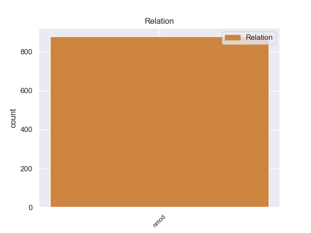
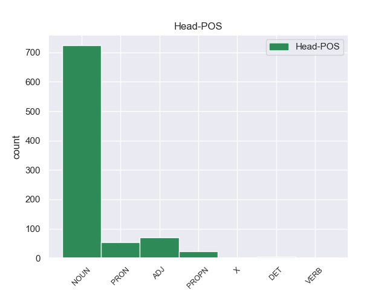
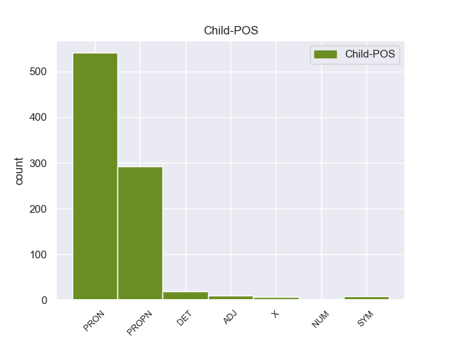

Distribution of features within this leaf



Agreement Rules sorted by frequency.
- When the dependent token is the nominal modifier(nmod) of the head token, and the dependent token is PRON.
1 Trato _ _ _ _ 0 _ _ _
2 rudo _ _ _ _ 0 _ _ _
3 y _ _ _ _ 0 _ _ _
4 poco _ _ _ _ 0 _ _ _
5 amable _ _ _ _ 0 _ _ _
6 con _ _ _ _ 0 _ _ _
7 el _ _ _ _ 0 _ _ _
8 cliente _ _ _ _ 0 _ _ _
9 , _ _ _ _ 0 _ _ _
10 productos _ _ _ _ 0 _ _ _
11 no _ _ _ _ 0 _ _ _
12 completamente _ _ _ _ 0 _ _ _
13 nuevos _ _ _ _ 0 _ _ _
14 , _ _ _ _ 0 _ _ _
15 almacén _ _ _ _ 0 _ _ _
16 sucio _ _ _ _ 0 _ _ _
17 y _ _ _ _ 0 _ _ _
18 desordenado _ _ _ _ 0 _ _ _
19 , _ _ _ _ 0 _ _ _
20 y _ _ _ _ 0 _ _ _
21 servicio _ _ _ _ 0 _ _ _
22 postventa _ _ _ _ 0 _ _ _
23 inexistente _ _ _ _ 0 _ _ _
24 , _ _ _ _ 0 _ _ _
25 sobre _ _ _ _ 0 _ _ _
26 todo todo PRON _ Gender=Masc|Number=Sing|PronType=Tot 28 nmod _ _
27 con _ _ _ _ 0 _ _ _
28 productos producto NOUN _ Gender=Masc|Number=Plur 0 _ _ _
29 pequeños _ _ _ _ 0 _ _ _
30 . _ _ _ _ 0 _ _ _
1 La _ _ _ _ 0 _ _ _
2 totalidad _ _ _ _ 0 _ _ _
3 de _ _ _ _ 0 _ _ _
4 los _ _ _ _ 0 _ _ _
5 libros _ _ _ _ 0 _ _ _
6 de _ _ _ _ 0 _ _ _
7 cuentos _ _ _ _ 0 _ _ _
8 , _ _ _ _ 0 _ _ _
9 y _ _ _ _ 0 _ _ _
10 casi _ _ _ _ 0 _ _ _
11 todas _ _ _ _ 0 _ _ _
12 sus _ _ _ _ 0 _ _ _
13 novelas novela NOUN _ Gender=Fem|Number=Plur 0 _ _ _
14 ( _ _ _ _ 0 _ _ _
15 salvo _ _ _ _ 0 _ _ _
16 La _ _ _ _ 0 _ _ _
17 literatura literatura PROPN _ Gender=Fem|Number=Sing 13 nmod _ _
18 nazi _ _ _ _ 0 _ _ _
19 en _ _ _ _ 0 _ _ _
20 América _ _ _ _ 0 _ _ _
21 , _ _ _ _ 0 _ _ _
22 publicada _ _ _ _ 0 _ _ _
23 por _ _ _ _ 0 _ _ _
24 la _ _ _ _ 0 _ _ _
25 editorial _ _ _ _ 0 _ _ _
26 Seix _ _ _ _ 0 _ _ _
27 Barral _ _ _ _ 0 _ _ _
28 , _ _ _ _ 0 _ _ _
29 y _ _ _ _ 0 _ _ _
30 Consejos _ _ _ _ 0 _ _ _
31 de _ _ _ _ 0 _ _ _
32 un _ _ _ _ 0 _ _ _
33 discípulo _ _ _ _ 0 _ _ _
34 ... _ _ _ _ 0 _ _ _
35 , _ _ _ _ 0 _ _ _
36 reeditada _ _ _ _ 0 _ _ _
37 por _ _ _ _ 0 _ _ _
38 la _ _ _ _ 0 _ _ _
39 Editorial _ _ _ _ 0 _ _ _
40 Acantilado _ _ _ _ 0 _ _ _
41 ) _ _ _ _ 0 _ _ _
42 , _ _ _ _ 0 _ _ _
43 fue _ _ _ _ 0 _ _ _
44 publicada _ _ _ _ 0 _ _ _
45 por _ _ _ _ 0 _ _ _
46 Anagrama _ _ _ _ 0 _ _ _
47 . _ _ _ _ 0 _ _ _
1 No _ _ _ _ 0 _ _ _
2 es _ _ _ _ 0 _ _ _
3 verdad _ _ _ _ 0 _ _ _
4 que _ _ _ _ 0 _ _ _
5 Etiopía _ _ _ _ 0 _ _ _
6 no _ _ _ _ 0 _ _ _
7 haya _ _ _ _ 0 _ _ _
8 estado _ _ _ _ 0 _ _ _
9 pidiendo _ _ _ _ 0 _ _ _
10 a _ _ _ _ 0 _ _ _
11 gritos _ _ _ _ 0 _ _ _
12 la _ _ _ _ 0 _ _ _
13 ayuda _ _ _ _ 0 _ _ _
14 alimentaria _ _ _ _ 0 _ _ _
15 durante _ _ _ _ 0 _ _ _
16 los _ _ _ _ 0 _ _ _
17 dos _ _ _ _ 0 _ _ _
18 pasados _ _ _ _ 0 _ _ _
19 años _ _ _ _ 0 _ _ _
20 pero _ _ _ _ 0 _ _ _
21 la _ _ _ _ 0 _ _ _
22 situación _ _ _ _ 0 _ _ _
23 de _ _ _ _ 0 _ _ _
24 guerra _ _ _ _ 0 _ _ _
25 ha _ _ _ _ 0 _ _ _
26 nublado _ _ _ _ 0 _ _ _
27 la _ _ _ _ 0 _ _ _
28 visión _ _ _ _ 0 _ _ _
29 de _ _ _ _ 0 _ _ _
30 muchos mucho PRON _ Gender=Masc|Number=Plur|NumType=Card|PronType=Ind 0 _ _ _
31 de _ _ _ _ 0 _ _ _
32 los el DET _ Definite=Def|Gender=Masc|Number=Plur|PronType=Art 30 nmod _ _
33 que _ _ _ _ 0 _ _ _
34 miraban _ _ _ _ 0 _ _ _
35 hacia _ _ _ _ 0 _ _ _
36 allí _ _ _ _ 0 _ _ _
37 . _ _ _ _ 0 _ _ _
1 Hay _ _ _ _ 0 _ _ _
2 algunos _ _ _ _ 0 _ _ _
3 países _ _ _ _ 0 _ _ _
4 en _ _ _ _ 0 _ _ _
5 Europa _ _ _ _ 0 _ _ _
6 , _ _ _ _ 0 _ _ _
7 entre _ _ _ _ 0 _ _ _
8 ellos _ _ _ _ 0 _ _ _
9 Dinamarca _ _ _ _ 0 _ _ _
10 , _ _ _ _ 0 _ _ _
11 también _ _ _ _ 0 _ _ _
12 los _ _ _ _ 0 _ _ _
13 Países _ _ _ _ 0 _ _ _
14 Bajos _ _ _ _ 0 _ _ _
15 o _ _ _ _ 0 _ _ _
16 Irlanda _ _ _ _ 0 _ _ _
17 , _ _ _ _ 0 _ _ _
18 que _ _ _ _ 0 _ _ _
19 en _ _ _ _ 0 _ _ _
20 el _ _ _ _ 0 _ _ _
21 ámbito _ _ _ _ 0 _ _ _
22 de _ _ _ _ 0 _ _ _
23 el _ _ _ _ 0 _ _ _
24 empleo _ _ _ _ 0 _ _ _
25 han _ _ _ _ 0 _ _ _
26 realizado _ _ _ _ 0 _ _ _
27 una _ _ _ _ 0 _ _ _
28 actuación actuación NOUN _ Gender=Fem|Number=Sing 0 _ _ _
29 igual _ _ _ _ 0 _ _ _
30 de _ _ _ _ 0 _ _ _
31 buena buena ADJ _ Gender=Fem|Number=Sing 28 nmod _ _
32 que _ _ _ _ 0 _ _ _
33 los _ _ _ _ 0 _ _ _
34 Estados _ _ _ _ 0 _ _ _
35 Unidos _ _ _ _ 0 _ _ _
36 . _ _ _ _ 0 _ _ _
1 Una _ _ _ _ 0 _ _ _
2 refrescante _ _ _ _ 0 _ _ _
3 escapada _ _ _ _ 0 _ _ _
4 que _ _ _ _ 0 _ _ _
5 le _ _ _ _ 0 _ _ _
6 permitirá _ _ _ _ 0 _ _ _
7 disfrutar _ _ _ _ 0 _ _ _
8 de _ _ _ _ 0 _ _ _
9 el _ _ _ _ 0 _ _ _
10 campo _ _ _ _ 0 _ _ _
11 para _ _ _ _ 0 _ _ _
12 hacer _ _ _ _ 0 _ _ _
13 senderismo _ _ _ _ 0 _ _ _
14 , _ _ _ _ 0 _ _ _
15 rutas ruta NOUN _ Gender=Fem|Number=Plur 0 _ _ _
16 en _ _ _ _ 0 _ _ _
17 quad quad X _ Gender=Fem|Number=Sing 15 nmod _ _
18 o _ _ _ _ 0 _ _ _
19 car _ _ _ _ 0 _ _ _
20 - _ _ _ _ 0 _ _ _
21 cross _ _ _ _ 0 _ _ _
22 . _ _ _ _ 0 _ _ _
1 Por _ _ _ _ 0 _ _ _
2 lo _ _ _ _ 0 _ _ _
3 tanto _ _ _ _ 0 _ _ _
4 , _ _ _ _ 0 _ _ _
5 he _ _ _ _ 0 _ _ _
6 propuesto _ _ _ _ 0 _ _ _
7 que _ _ _ _ 0 _ _ _
8 se _ _ _ _ 0 _ _ _
9 descienda _ _ _ _ 0 _ _ _
10 el _ _ _ _ 0 _ _ _
11 límite _ _ _ _ 0 _ _ _
12 de _ _ _ _ 0 _ _ _
13 resistencia _ _ _ _ 0 _ _ _
14 a _ _ _ _ 0 _ _ _
15 los _ _ _ _ 0 _ _ _
16 40 _ _ _ _ 0 _ _ _
17 grados grado NOUN _ Gender=Masc|Number=Plur|VerbForm=Part 0 _ _ _
18 bajo _ _ _ _ 0 _ _ _
19 cero cero NUM _ Gender=Masc|Number=Sing|NumType=Card 17 nmod _ SpaceAfter=No
20 . _ _ _ _ 0 _ _ _
Disagree Examples:
1 En _ _ _ _ 0 _ _ _
2 primer _ _ _ _ 0 _ _ _
3 lugar _ _ _ _ 0 _ _ _
4 , _ _ _ _ 0 _ _ _
5 este _ _ _ _ 0 _ _ _
6 asunto _ _ _ _ 0 _ _ _
7 está _ _ _ _ 0 _ _ _
8 en _ _ _ _ 0 _ _ _
9 proyecto _ _ _ _ 0 _ _ _
10 desde _ _ _ _ 0 _ _ _
11 1993 _ _ _ _ 0 _ _ _
12 , _ _ _ _ 0 _ _ _
13 por _ _ _ _ 0 _ _ _
14 tanto _ _ _ _ 0 _ _ _
15 no _ _ _ _ 0 _ _ _
16 ha _ _ _ _ 0 _ _ _
17 sido _ _ _ _ 0 _ _ _
18 ninguna _ _ _ _ 0 _ _ _
19 sorpresa sorpresa NOUN _ Gender=Fem|Number=Sing 0 _ _ _
20 para _ _ _ _ 0 _ _ _
21 ninguno ninguno PROPN _ Gender=Masc|Number=Sing 19 nmod _ _
22 de _ _ _ _ 0 _ _ _
23 los _ _ _ _ 0 _ _ _
24 otros _ _ _ _ 0 _ _ _
25 productores _ _ _ _ 0 _ _ _
26 . _ _ _ _ 0 _ _ _
1 Existe _ _ _ _ 0 _ _ _
2 el _ _ _ _ 0 _ _ _
3 informe _ _ _ _ 0 _ _ _
4 de _ _ _ _ 0 _ _ _
5 el _ _ _ _ 0 _ _ _
6 Tribunal _ _ _ _ 0 _ _ _
7 de _ _ _ _ 0 _ _ _
8 Cuentas _ _ _ _ 0 _ _ _
9 , _ _ _ _ 0 _ _ _
10 pero _ _ _ _ 0 _ _ _
11 existen _ _ _ _ 0 _ _ _
12 también _ _ _ _ 0 _ _ _
13 las _ _ _ _ 0 _ _ _
14 experiencias _ _ _ _ 0 _ _ _
15 de _ _ _ _ 0 _ _ _
16 los _ _ _ _ 0 _ _ _
17 diputados diputado NOUN _ Gender=Masc|Number=Plur 0 _ _ _
18 de _ _ _ _ 0 _ _ _
19 la _ _ _ _ 0 _ _ _
20 pasada _ _ _ _ 0 _ _ _
21 legislatura _ _ _ _ 0 _ _ _
22 , _ _ _ _ 0 _ _ _
23 sobre _ _ _ _ 0 _ _ _
24 todo _ _ _ _ 0 _ _ _
25 las el PRON _ Case=Acc|Gender=Fem|Number=Plur|Person=3|PrepCase=Npr|PronType=Prs 17 nmod _ _
26 de _ _ _ _ 0 _ _ _
27 Edith _ _ _ _ 0 _ _ _
28 Müller _ _ _ _ 0 _ _ _
29 , _ _ _ _ 0 _ _ _
30 que _ _ _ _ 0 _ _ _
31 ha _ _ _ _ 0 _ _ _
32 hecho _ _ _ _ 0 _ _ _
33 sondeos _ _ _ _ 0 _ _ _
34 constantemente _ _ _ _ 0 _ _ _
35 en _ _ _ _ 0 _ _ _
36 Bosnia- _ _ _ _ 0 _ _ _
37 Herzegovina _ _ _ _ 0 _ _ _
38 pues _ _ _ _ 0 _ _ _
39 se _ _ _ _ 0 _ _ _
40 puso _ _ _ _ 0 _ _ _
41 claramente _ _ _ _ 0 _ _ _
42 de _ _ _ _ 0 _ _ _
43 manifiesto _ _ _ _ 0 _ _ _
44 que _ _ _ _ 0 _ _ _
45 había _ _ _ _ 0 _ _ _
46 una _ _ _ _ 0 _ _ _
47 conciencia _ _ _ _ 0 _ _ _
48 de _ _ _ _ 0 _ _ _
49 la _ _ _ _ 0 _ _ _
50 responsabilidad _ _ _ _ 0 _ _ _
51 demasiado _ _ _ _ 0 _ _ _
52 débil _ _ _ _ 0 _ _ _
53 en _ _ _ _ 0 _ _ _
54 la _ _ _ _ 0 _ _ _
55 aplicación _ _ _ _ 0 _ _ _
56 , _ _ _ _ 0 _ _ _
57 en _ _ _ _ 0 _ _ _
58 el _ _ _ _ 0 _ _ _
59 gasto _ _ _ _ 0 _ _ _
60 de _ _ _ _ 0 _ _ _
61 el _ _ _ _ 0 _ _ _
62 dinero _ _ _ _ 0 _ _ _
63 , _ _ _ _ 0 _ _ _
64 en _ _ _ _ 0 _ _ _
65 la _ _ _ _ 0 _ _ _
66 comprobación _ _ _ _ 0 _ _ _
67 y _ _ _ _ 0 _ _ _
68 en _ _ _ _ 0 _ _ _
69 el _ _ _ _ 0 _ _ _
70 procedimiento _ _ _ _ 0 _ _ _
71 de _ _ _ _ 0 _ _ _
72 aprobación _ _ _ _ 0 _ _ _
73 de _ _ _ _ 0 _ _ _
74 la _ _ _ _ 0 _ _ _
75 gestión _ _ _ _ 0 _ _ _
76 . _ _ _ _ 0 _ _ _
1 Rechazamos _ _ _ _ 0 _ _ _
2 cualquier _ _ _ _ 0 _ _ _
3 intento _ _ _ _ 0 _ _ _
4 de _ _ _ _ 0 _ _ _
5 vaciar _ _ _ _ 0 _ _ _
6 a _ _ _ _ 0 _ _ _
7 nuestras _ _ _ _ 0 _ _ _
8 constituciones _ _ _ _ 0 _ _ _
9 de _ _ _ _ 0 _ _ _
10 contenido _ _ _ _ 0 _ _ _
11 democrático _ _ _ _ 0 _ _ _
12 y _ _ _ _ 0 _ _ _
13 exhortamos _ _ _ _ 0 _ _ _
14 a _ _ _ _ 0 _ _ _
15 la _ _ _ _ 0 _ _ _
16 opinión _ _ _ _ 0 _ _ _
17 pública _ _ _ _ 0 _ _ _
18 a _ _ _ _ 0 _ _ _
19 que _ _ _ _ 0 _ _ _
20 se _ _ _ _ 0 _ _ _
21 inmiscuya _ _ _ _ 0 _ _ _
22 en _ _ _ _ 0 _ _ _
23 las _ _ _ _ 0 _ _ _
24 negociaciones negociación NOUN _ Gender=Fem|Number=Plur 0 _ _ _
25 sobre _ _ _ _ 0 _ _ _
26 el _ _ _ _ 0 _ _ _
27 Tratado tratado PROPN _ Gender=Masc|Number=Sing 24 nmod _ _
28 de _ _ _ _ 0 _ _ _
29 Niza _ _ _ _ 0 _ _ _
30 antes _ _ _ _ 0 _ _ _
31 de _ _ _ _ 0 _ _ _
32 que _ _ _ _ 0 _ _ _
33 sea _ _ _ _ 0 _ _ _
34 tarde _ _ _ _ 0 _ _ _
35 . _ _ _ _ 0 _ _ _
1 La _ _ _ _ 0 _ _ _
2 directiva _ _ _ _ 0 _ _ _
3 será _ _ _ _ 0 _ _ _
4 aplicable _ _ _ _ 0 _ _ _
5 en _ _ _ _ 0 _ _ _
6 el _ _ _ _ 0 _ _ _
7 caso _ _ _ _ 0 _ _ _
8 de _ _ _ _ 0 _ _ _
9 accidentes _ _ _ _ 0 _ _ _
10 en _ _ _ _ 0 _ _ _
11 el _ _ _ _ 0 _ _ _
12 que _ _ _ _ 0 _ _ _
13 se _ _ _ _ 0 _ _ _
14 vean _ _ _ _ 0 _ _ _
15 involucrados _ _ _ _ 0 _ _ _
16 nacionales _ _ _ _ 0 _ _ _
17 de _ _ _ _ 0 _ _ _
18 un _ _ _ _ 0 _ _ _
19 Estado _ _ _ _ 0 _ _ _
20 miembro _ _ _ _ 0 _ _ _
21 de _ _ _ _ 0 _ _ _
22 la _ _ _ _ 0 _ _ _
23 Unión _ _ _ _ 0 _ _ _
24 en _ _ _ _ 0 _ _ _
25 territorio _ _ _ _ 0 _ _ _
26 de _ _ _ _ 0 _ _ _
27 la _ _ _ _ 0 _ _ _
28 Unión _ _ _ _ 0 _ _ _
29 o _ _ _ _ 0 _ _ _
30 en _ _ _ _ 0 _ _ _
31 cualquier _ _ _ _ 0 _ _ _
32 país _ _ _ _ 0 _ _ _
33 tercero _ _ _ _ 0 _ _ _
34 que _ _ _ _ 0 _ _ _
35 aplique _ _ _ _ 0 _ _ _
36 el _ _ _ _ 0 _ _ _
37 sistema sistema NOUN _ Gender=Masc|Number=Sing 0 _ _ _
38 de _ _ _ _ 0 _ _ _
39 la _ _ _ _ 0 _ _ _
40 Tarjeta Tarjeta PROPN _ Gender=Fem|Number=Sing 37 nmod _ _
41 Verde _ _ _ _ 0 _ _ _
42 . _ _ _ _ 0 _ _ _
1 No _ _ _ _ 0 _ _ _
2 resulta _ _ _ _ 0 _ _ _
3 muy _ _ _ _ 0 _ _ _
4 divertido _ _ _ _ 0 _ _ _
5 tener _ _ _ _ 0 _ _ _
6 que _ _ _ _ 0 _ _ _
7 discutir _ _ _ _ 0 _ _ _
8 la _ _ _ _ 0 _ _ _
9 Conferencia _ _ _ _ 0 _ _ _
10 Gubernamental _ _ _ _ 0 _ _ _
11 y _ _ _ _ 0 _ _ _
12 la _ _ _ _ 0 _ _ _
13 transparencia transparencia NOUN _ Gender=Fem|Number=Sing 0 _ _ _
14 con _ _ _ _ 0 _ _ _
15 uno uno PRON _ Gender=Masc|Number=Sing|PronType=Ind 13 nmod _ _
16 mismo _ _ _ _ 0 _ _ _
17 . _ _ _ _ 0 _ _ _